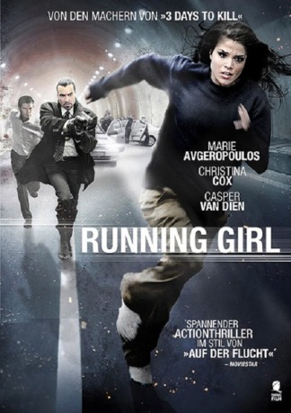

gesehen am 19.12.2016
gesehen am 19.12.2016Alternativ: Fugitive at 17 (Originaltitel) gesehen am 19.12.2016
 
 IMDB-Wertung: 6.3 / 10
IMDB-Wertung: 6.3 / 10  Metascore:
Metascore: 
Holly ist ein selbstbewusstes Teenagermädchen mit weitreichenden Hacker-Kenntnissen. Wie ein moderner Robin Hood nutzt sie ihre Fähigkeiten und hilft ihren Mitmenschen und Freunden. Als Hollys Oma eine wichtige Operation benötigt, diese jedoch nicht finanzieren kann, hackt sich ihre Enkelin in das System der Krankenkasse und macht das Unmögliche möglich. Doch plötzlich wird Holly auf die Seite der Verbrecher gedrängt. Ihre beste Freundin stirbt auf einer Party an einer Überdosis K.O.-Tropfen und zunächst ist nicht klar, wer daran Schuld hat. Der Täter geht geschickt vor und jubelt Holly die Tat unter. Kurze Zeit später wird sie festgenommen. Als ihr die Flucht gelingt, beginnt sie auf eigene Faust zu ermitteln, wer wirklich hinter dem Mord steckt. Ob Holly mit Hilfe ihrer Hacker-Künste dem Täter auf die Spur kommt?
Jahr: 2012
Dauer: 91 Minuten
FSK:
Land: Kanada Studio: Reel One EntertainmentTonspuren: DTS - ,
Untertitel: Deutsch,
Auflösung: 1080p (1920x1080) Größe: 7792 MB
Genre: Thriller, Krimi, Mystery
Regisseur: Jim Donovan
Drehbuch: Pan Nalin
Soundtrack:
Darsteller:
 Marie Avgeropoulos als Holly Hamilton
Marie Avgeropoulos als Holly Hamilton Christina Cox als Detective Cameron Langford
Christina Cox als Detective Cameron Langford Casper Van Dien als Spencer Oliphant
Casper Van Dien als Spencer Oliphant Daniel Rindress-Kay als Dan Dalton
Daniel Rindress-Kay als Dan Dalton Rosemary Dunsmore als Grandmother
Rosemary Dunsmore als Grandmother Frank Schorpion als Captain Tony Ashler
Frank Schorpion als Captain Tony AshlerDatei: X:\2012(N-Z)\Running Girl (2012, FSK, 1920x1080).mkv seit 05.12.2016
Festplatte: HD 2012(N-Z)-2013(A-H)
 Es gibt insgesamt 138 Filme in der Gruppe '2012(N-Z)'
Es gibt insgesamt 138 Filme in der Gruppe '2012(N-Z)'